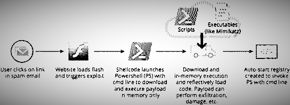

Fileless Malware
Fileless malware is a type of malicious software that uses Whitelisted programs to infect a computer.
It does not rely on files that are in an HDD or SSD, making it almost impossible to detect and remove.
Modern virus creators know the strategies anti-viruses use to try to block their attacks,
and they’re crafting increasingly complicated, targeted malware to evade defenses.
It’s a race against time, as the most effective hacking techniques are usually the newest ones.
Fileless malware has been effective in evading all but the most sophisticated security systems.
|
|---|
How does it workThis figure shows how a fileless malware attack can happen. Like most advanced attacks today, fileless attacks often use pop-ups spam emails or fake free software to get users to click on a link. Fileless attacks are typically used for lateral movement, meaning they make their way from one device to the next with the objective of gaining access rights to valuable data across the enterprise network like banks. To avoid suspicion, fileless malware gets into whitelisted applications like PowerShell and Windows script host executables etc. or the operating system to initiate the processes to attack the machine. These attacks abuse the trust model used by security applications to not monitor whitelisted programs and therefore be ignored by the anti-virus. |
 |
|---|
History Fileless malware is a quite recent threat, itemerged in 2017 as a mainstream type of attack,
but many of these attack methods have been around for a while. More recent,
high-profile fileless attacks include the hack of the Democratic National Committee and the Equifax breach.
What makes fileless infections so insidious is also what makes them so effective.
There are claims that fileless malware is “undetectable.” This isn’t literally true,
it just means that fileless attacks are often undetectable by antivirus, whitelisting,
and other traditional endpoint security solutions. Experts claim that it is 1000% more effective
than conventional methods.
|
|---|
Fileless Malware |
Filippo Baracca |
|
baracf@usi.ch
|---|